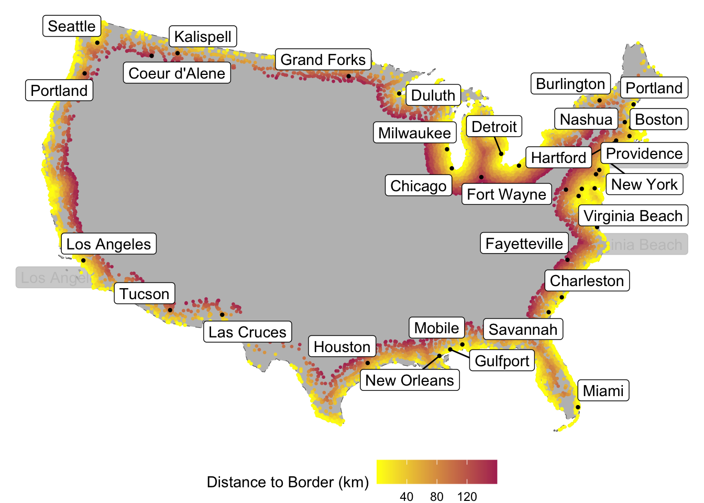

Code
#remotes::install_github("ropensci/USAboundaries")
#remotes::install_github("ropensci/USAboundariesData")Border Summaries
#remotes::install_github("ropensci/USAboundaries")
#remotes::install_github("ropensci/USAboundariesData")#remotes::install_github("ropenscilabs/rnaturalearthdata")#install.packages("gghighlight")
#install.packages("ggrepel")# spatial data science
library(tidyverse)── Attaching core tidyverse packages ──────────────────────── tidyverse 2.0.0 ──
✔ dplyr 1.1.4 ✔ readr 2.1.5
✔ forcats 1.0.0 ✔ stringr 1.5.1
✔ ggplot2 3.5.2 ✔ tibble 3.2.1
✔ lubridate 1.9.4 ✔ tidyr 1.3.1
✔ purrr 1.0.4
── Conflicts ────────────────────────────────────────── tidyverse_conflicts() ──
✖ dplyr::filter() masks stats::filter()
✖ dplyr::lag() masks stats::lag()
ℹ Use the conflicted package (<http://conflicted.r-lib.org/>) to force all conflicts to become errorslibrary(sf)Linking to GEOS 3.13.0, GDAL 3.8.5, PROJ 9.5.1; sf_use_s2() is TRUElibrary(units)udunits database from /Library/Frameworks/R.framework/Versions/4.5-x86_64/Resources/library/units/share/udunits/udunits2.xml# Data
library(USAboundaries)
library(rnaturalearth)
# Visualization
library(gghighlight)
library(ggrepel)
library(knitr)For this lab we need three (3) datasets.
For this lab we want to calculate distances between features, therefore we need a projection that preserves distance at the scale of CONUS. For this, we will use the North America Equidistant Conic:
eqdc <- '+proj=eqdc +lat_0=40 +lon_0=-96 +lat_1=20 +lat_2=60 +x_0=0 +y_0=0 +datum=NAD83 +units=m +no_defs'This PROJ.4 string defines an Equidistant Conic projection with the following parameters:
+proj=eqdc → Equidistant Conic projection
+lat_0=40 → Latitude of the projection’s center (40°N)
+lon_0=-96 → Central meridian (96°W)
+lat_1=20 → First standard parallel (20°N)
+lat_2=60 → Second standard parallel (60°N)
+x_0=0 → False easting (0 meters)
+y_0=0 → False northing (0 meters)
+datum=NAD83 → Uses the North American Datum 1983 (NAD83)
+units=m → Units are in meters
+no_defs → No additional default parameters from PROJ’s database
This projection is commonly used for mapping large areas with an east-west extent, especially in North America, as it balances distortion well between the two standard parallels.
USAboundaries::us_states(resolution = "low"). Given the precision needed for this analysis we are ok with the low resolution.filter)eqdc).In R, country boundaries are stored in the rnaturalearth package.
Once installed:
rnaturalearth::countries110.sf) format (Hint use the st_as_sf variable).filter on the admin variable)eqdc).states <- USAboundaries::us_states(resolution = "low") %>%
st_as_sf() %>%
filter(!state_abbr %in% c("HI", "AK", "PR")) %>%
st_transform(eqdc)
# USA State Boundaries
countries <- rnaturalearth::countries110 %>%
st_as_sf() %>%
filter(ABBREV %in% c("U.S.A.", "Mex.", "Can.")) %>%
st_transform(eqdc) The process of finding, downloading and accessing data is the first step of every analysis. Here we will go through these steps (minus finding the data).
First go to this site and download the appropriate (free) dataset into the data directory of this project.
Once downloaded, read it into your working session using readr::read_csv() and explore the dataset until you are comfortable with the information it contains.
While this data has everything we want, it is not yet spatial. Convert the data.frame to a spatial object using st_as_sf and prescribing the coordinate variables and CRS (Hint what projection are the raw coordinates in?)
Finally, remove cities in states not wanted and make sure the data is in a projected coordinate system suitable for distance measurements at the national scale:
Congratulations! You now have three real-world, large datasets ready for analysis.
cities <- read_csv("~/Desktop/CSU Spring 2025/ESS523c/ESS_523c/simplemaps_uscities_basicv1/uscities.csv", show_col_types = FALSE) %>%
st_as_sf(coords = c("lng", "lat"), crs = 4326) %>%
st_transform(eqdc) Here we will focus on calculating the distance of each USA city to (1) the national border (2) the nearest state border (3) the Mexican border and (4) the Canadian border. You will need to manipulate you existing spatial geometries to do this using either st_union or st_combine depending on the situation. In all cases, since we are after distances to borders, we will need to cast (st_cast) our MULTIPPOLYGON geometries to MULTILINESTRING geometries. To perform these distance calculations we will use st_distance().
For 2.2 we are interested in calculating the distance of each USA city to the USA border (coastline or national border). To do this we need all states to act as single unit. Convert the USA state boundaries to a MULTILINESTRING geometry in which the state boundaries are resolved. Please do this starting with the states object and NOT with a filtered country object. In addition to storing this distance data as part of the cities data.frame, produce a table (flextable) documenting the five cities farthest from a state border. Include only the city name, state, and distance.
us <- st_union(states) %>%
st_cast("MULTILINESTRING") %>%
st_as_sf()
cities <- cities %>%
st_filter(st_union(states)) %>%
mutate(distance_to_us_border = set_units(st_distance(., us), "km"))
select(cities, city, state_name, distance_to_us_border) %>%
st_drop_geometry() %>%
slice_max(distance_to_us_border, n = 5) %>%
flextable::flextable()city | state_name | distance_to_us_border |
|---|---|---|
Ludell | Kansas | 1,012.508 [km] |
Dresden | Kansas | 1,012.398 [km] |
Herndon | Kansas | 1,007.763 [km] |
Hill City | Kansas | 1,005.140 [km] |
Atwood | Kansas | 1,004.734 [km] |
For 2.1 we are interested in calculating the distance of each city to the nearest state boundary. To do this we need all states to act as single unit. Convert the USA state boundaries to a MULTILINESTRING geometry in which the state boundaries are preserved (not resolved). In addition to storing this distance data as part of the cities data.frame, produce a table (flextable) documenting the five cities farthest from a state border. Include only the city name, state, and distance.
us <- st_combine(states) |>
st_cast("MULTILINESTRING") |>
st_as_sf()
cities <- cities %>%
st_filter(st_union(states)) %>%
mutate(distance_to_state_border = set_units(st_distance(., us), "km"))
select(cities, city, state_name, distance_to_state_border) |>
st_drop_geometry() |>
slice_max(distance_to_state_border, n = 5) |>
flextable::flextable()city | state_name | distance_to_state_border |
|---|---|---|
Briggs | Texas | 309.4150 [km] |
Lampasas | Texas | 308.9216 [km] |
Kempner | Texas | 302.5868 [km] |
Bertram | Texas | 302.5776 [km] |
Harker Heights | Texas | 298.8138 [km] |
For 2.3 we are interested in calculating the distance of each city to the Mexican border. To do this we need to isolate Mexico from the country objects. In addition to storing this data as part of the cities data.frame, produce a table (flextable) documenting the five cities farthest from a state border. Include only the city name, state, and distance.
mx <- filter(countries, ADMIN == "Mexico") %>%
st_cast("MULTILINESTRING") %>%
st_as_sf()
cities <- cities %>%
st_filter(st_union(states)) %>%
mutate(distance_to_mx_border = set_units(st_distance(., mx), "km"))
select(cities, city, state_name, distance_to_mx_border) %>%
st_drop_geometry() %>%
slice_max(distance_to_mx_border, n = 5) %>%
flextable::flextable()city | state_name | distance_to_mx_border |
|---|---|---|
Grand Isle | Maine | 3,282.825 [km] |
Caribou | Maine | 3,250.330 [km] |
Presque Isle | Maine | 3,234.570 [km] |
Oakfield | Maine | 3,175.577 [km] |
Island Falls | Maine | 3,162.285 [km] |
For 2.4 we are interested in calculating the distance of each city to the Canadian border. To do this we need to isolate Canada from the country objects. In addition to storing this data as part of the cities data.frame, produce a table (flextable) documenting the five cities farthest from a state border. Include only the city name, state, and distance.
ca <- filter(countries, ADMIN == "Canada") %>%
st_cast("MULTILINESTRING") %>%
st_as_sf()
cities <- cities %>%
st_filter(st_union(states)) %>%
mutate(distance_to_ca_border = set_units(st_distance(., ca), "km"))
select(cities, city, state_name, distance_to_ca_border) %>%
st_drop_geometry() %>%
slice_max(distance_to_ca_border, n = 5) %>%
flextable::flextable()city | state_name | distance_to_ca_border |
|---|---|---|
Guadalupe Guerra | Texas | 2,206.455 [km] |
Sandoval | Texas | 2,205.641 [km] |
Fronton | Texas | 2,204.794 [km] |
Fronton Ranchettes | Texas | 2,202.118 [km] |
Evergreen | Texas | 2,202.020 [km] |
In this section we will focus on visualizing the distance data you calculated above. You will be using ggplot to make your maps, ggrepl to label significant features, and gghighlight to emphasize important criteria.
Show the 3 continents, CONUS outline, state boundaries, and 10 largest USA cities (by population) on a single map
geom_sf to plot your layerslty to change the line type and size to change line widthggrepel::geom_label_repel to label your citiesna <- filter(countries, ADMIN %in% c("Mexico", "Canada", "United States of America")) %>%
st_as_sf()
big_cities <- cities %>%
slice_max(population, n = 10)
ggplot() +
geom_sf(data = na, fill = "grey") +
geom_sf(data = states, fill = "white", lty = 2, size = 0.5) +
geom_sf(data = big_cities, color = 'blue', size = .5) +
ggrepel::geom_label_repel(data = big_cities,
aes(geometry = geometry, label = city, label.size = .1),
stat = "sf_coordinates") +
theme_void()Warning in ggrepel::geom_label_repel(data = big_cities, aes(geometry =
geometry, : Ignoring unknown aesthetics: label.sizeCreate a map that colors USA cities by their distance from the national border. In addition, re-draw and label the 5 cities that are farthest from the border.
five_farthest <- cities %>%
slice_max(distance_to_us_border, n = 5)
ggplot() +
geom_sf(data = st_union(states), fill = "grey", lty = 2, size = 0.5) +
geom_sf(data = cities, aes(color = as.numeric(distance_to_us_border)), size = .5) +
geom_sf(data = five_farthest, color = 'red', size = .7) +
ggrepel::geom_label_repel(data = five_farthest,
aes(geometry = geometry, label = city, label.size = .1),
stat = "sf_coordinates") +
scale_color_viridis_c() +
theme_void() +
theme(legend.position = "bottom") +
labs(color = "Distance to Border (km)")Warning in ggrepel::geom_label_repel(data = five_farthest, aes(geometry =
geometry, : Ignoring unknown aesthetics: label.sizeCreate a map that colors USA cities by their distance from the nearest state border. In addition, re-draw and label the 5 cities that are farthest from any border.
five_farthest <- cities %>%
slice_max(distance_to_state_border, n = 5)
ggplot() +
geom_sf(data = st_union(states), fill = "grey", lty = 2, size = 0.5) +
geom_sf(data = cities, aes(color = as.numeric(distance_to_state_border)), size = .5) +
geom_sf(data = five_farthest, color = 'red', size = .7) +
ggrepel::geom_label_repel(data = five_farthest,
aes(geometry = geometry, label = city, label.size = .1),
stat = "sf_coordinates") +
scale_color_viridis_c() +
theme_void() +
theme(legend.position = "bottom") +
labs(color = "Distance to Border (km)")Warning in ggrepel::geom_label_repel(data = five_farthest, aes(geometry =
geometry, : Ignoring unknown aesthetics: label.sizeHere we provide a little more challenge. Use gghighlight to identify the cities that are equal distance from the Canadian AND Mexican border \(\pm\) 100 km.
In addition, label the five (5) most populous cites in this zone.
cities <- cities %>%
mutate(can_mx_dist = as.numeric(abs(distance_to_ca_border - distance_to_mx_border)))
five_farthest = filter(cities, can_mx_dist < 100) %>%
slice_max(population, n = 5)
ggplot() +
geom_sf(data = st_union(states), fill = "grey", lty = 2, size = 0.5) +
geom_sf(data = cities, aes(color = as.numeric(distance_to_us_border)), size = .5) +
geom_sf(data = five_farthest, color = 'red', size = .7) +
ggrepel::geom_label_repel(data = five_farthest,
aes(geometry = geometry, label = city),
size = 2,
stat = "sf_coordinates") +
scale_color_viridis_c() +
gghighlight(can_mx_dist < 100) +
theme_void() +
theme(legend.position = "bottom") +
labs(color = "Distance to Border (km)")Warning: Could not calculate the predicate for layer 1; ignoredRecently, Federal Agencies have claimed basic constitutional rights protected by the Fourth Amendment (protecting Americans from random and arbitrary stops and searches) do not apply fully at our borders (see Portland). For example, federal authorities do not need a warrant or suspicion of wrongdoing to justify conducting what courts have called a “routine search,” such as searching luggage or a vehicle. Specifically, federal regulations give U.S. Customs and Border Protection (CBP) authority to operate within 100 miles of any U.S. “external boundary”. Further information can be found at this ACLU article.
cities %>%
st_drop_geometry() %>%
filter(as.numeric(distance_to_us_border) < 160) %>%
summarise(`Impacted Cities` = n(),
`Impacted Population` = sum(population),
`Impacted Percentage` = round(sum(population) / sum(cities$population) * 100, 2)) %>%
flextable::flextable()Impacted Cities | Impacted Population | Impacted Percentage |
|---|---|---|
13,131 | 256,028,031 | 64.63 |
Report this information as a table.
gghighlight.largest_10 = filter(cities, as.numeric(distance_to_us_border) < 160) %>%
slice_max(population, n = 10)
ggplot() +
geom_sf(data = st_union(states), fill = "grey", lty = 2, size = 0.5) +
geom_sf(data = cities, aes(color = as.numeric(distance_to_us_border)), size = .5) +
geom_sf(data = largest_10, color = 'black', size = .8, shape = 4) +
ggrepel::geom_label_repel(data = largest_10,
aes(geometry = geometry, label = city),
stat = "sf_coordinates") +
scale_color_gradient(low = "yellow", high = "maroon") +
gghighlight(as.numeric(distance_to_us_border) < 160) +
theme_void() +
theme(legend.position = "bottom") +
labs(color = "Distance to Border (km)")Warning: Could not calculate the predicate for layer 1; ignoredlargest_state = filter(cities, as.numeric(distance_to_us_border) < 160) %>%
group_by(state_name) %>%
slice_max(population, n = 1)
ggplot() +
geom_sf(data = st_union(states), fill = "grey", lty = 2, size = 0.5) +
geom_sf(data = cities, aes(color = as.numeric(distance_to_us_border)), size = .5) +
geom_sf(data = largest_state, color = 'black', size = .8) +
ggrepel::geom_label_repel(data = largest_state,
aes(geometry = geometry, label = city),
stat = "sf_coordinates") +
scale_color_gradient(low = "yellow", high = "maroon") +
gghighlight(as.numeric(distance_to_us_border) < 160) +
theme_void() +
theme(legend.position = "bottom") +
labs(color = "Distance to Border (km)")Warning: Tried to calculate with group_by(), but the calculation failed.
Falling back to ungrouped filter operation...Warning: Could not calculate the predicate for layer 1; ignoredWarning: ggrepel: 8 unlabeled data points (too many overlaps). Consider
increasing max.overlapsWarning: ggrepel: 7 unlabeled data points (too many overlaps). Consider
increasing max.overlaps
Total: 150 points
For this lab you will submit a URL to a webpage deployed with GitHub pages.
To do this:
`https://USERNAME.github.io/csu-523c/lab-02.html``
Submit this URL in the appropriate Canvas dropbox. Also take a moment to update your personal webpage with this link and some bullet points of what you learned. While not graded as part of this lab, it will be your final!